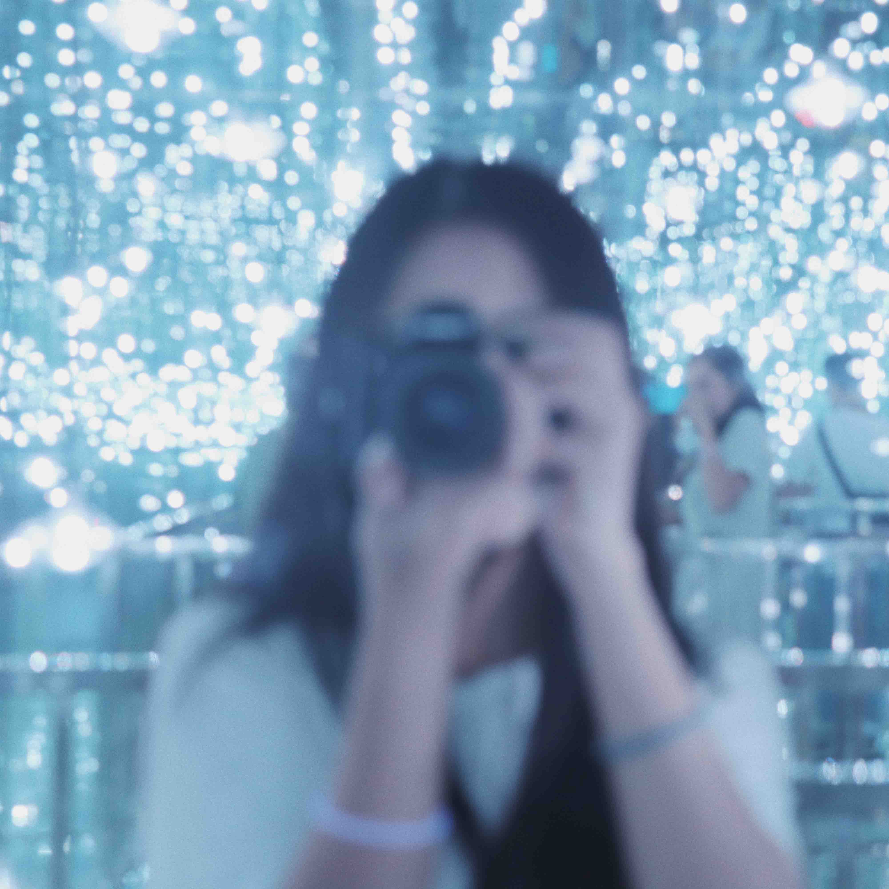
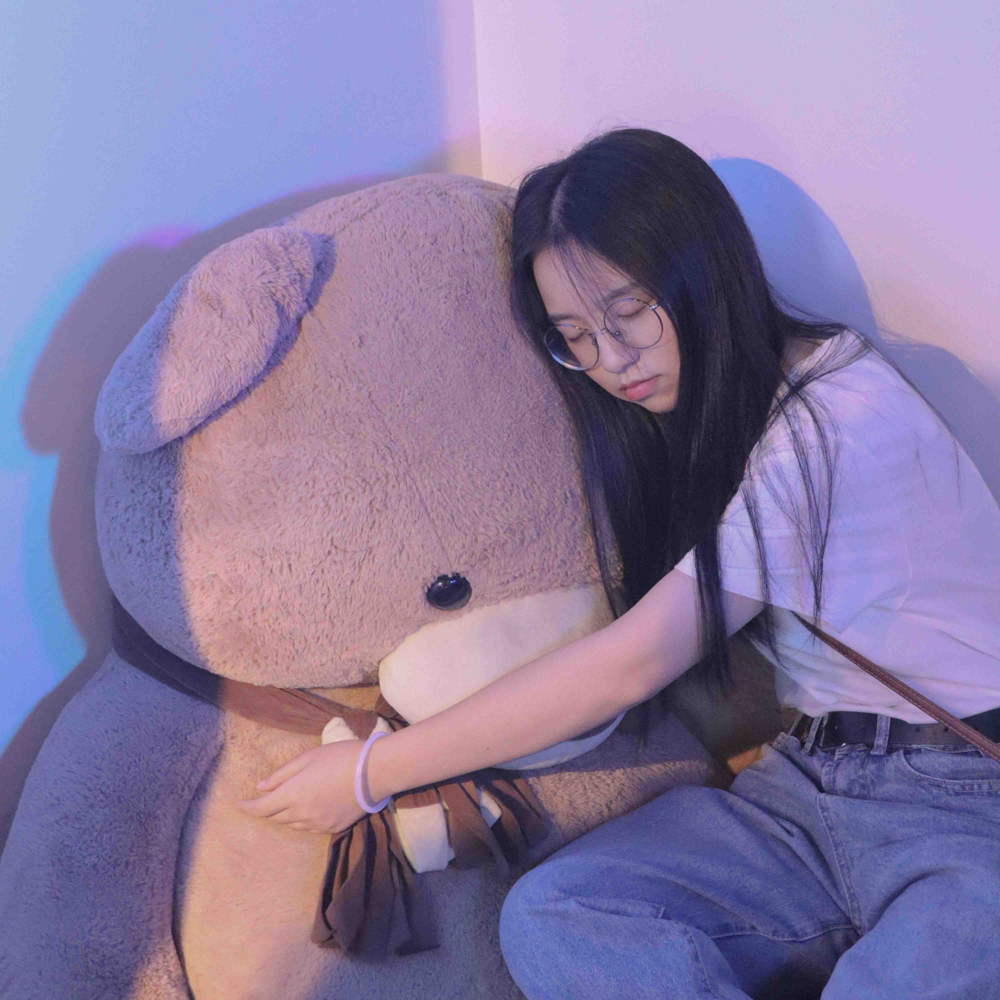
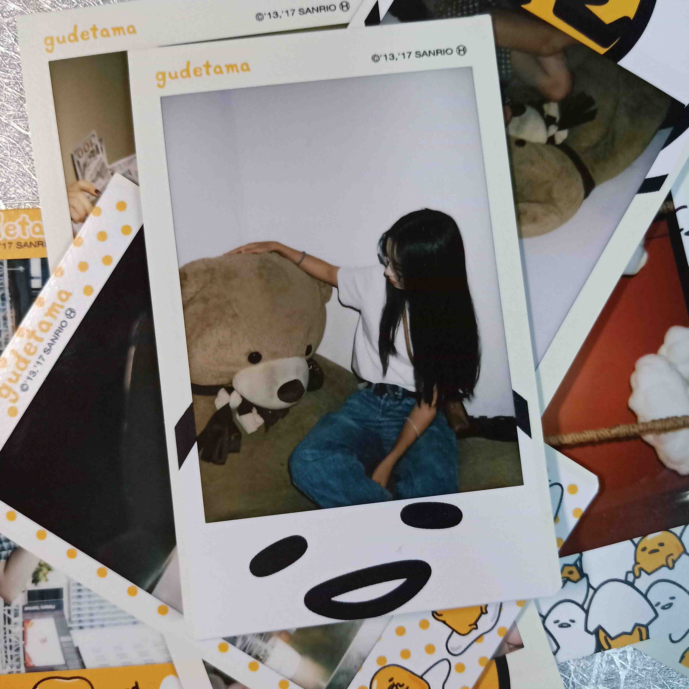
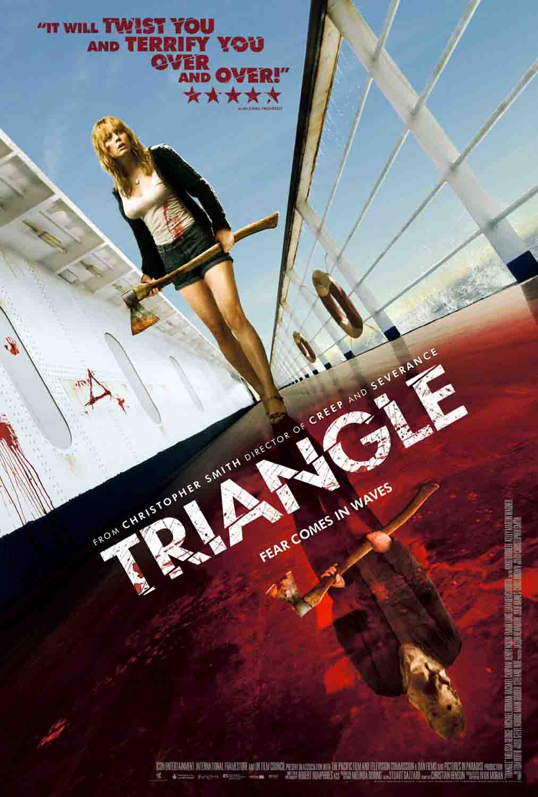
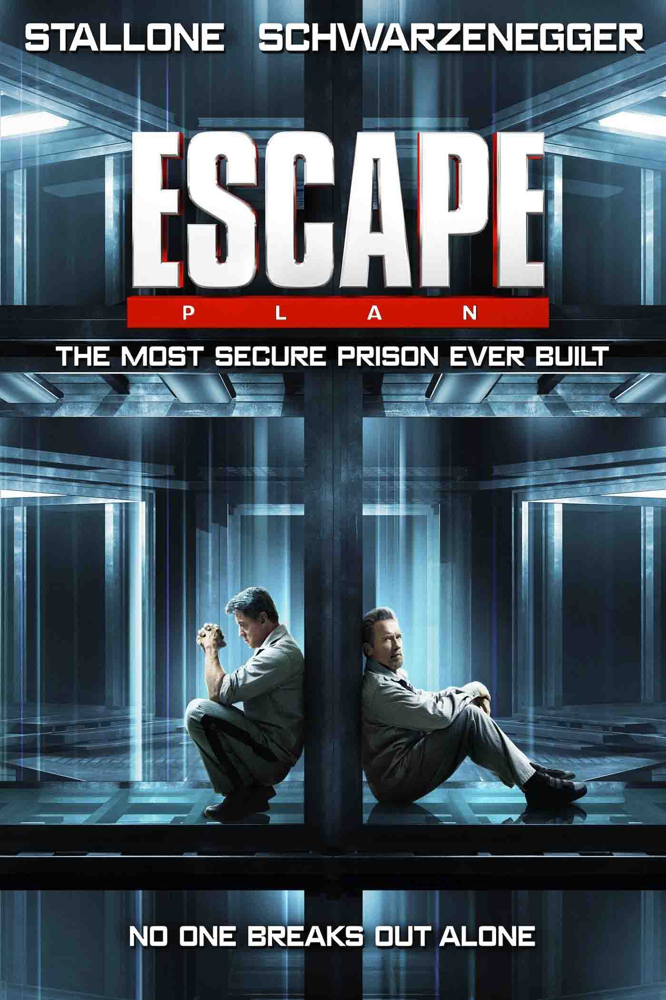
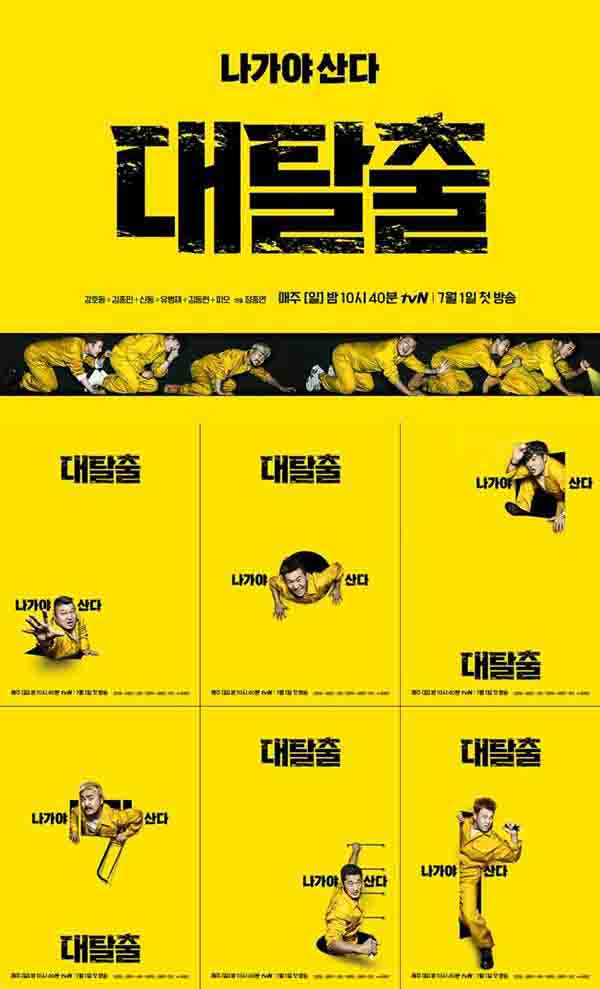

基本信息
兴趣爱好
社交频道
我的推荐

电影

《恐怖游轮》 推荐指数：
这部电影我反复看过四五遍，是一部比较烧脑的片子。如果说到循环套路大部人也会想到它，我个人来说也比较吃这种套路，因为能给电影增加起伏感和趣味性，易引起人的深思。因为涉及到套路问题，我在这里就不再透露更多了，大家自己去看吧！
《海市蜃楼》 推荐指数：
这部电影是去年在杭州的电影院看的，我一贯喜欢能让我产生恍然大悟的感觉电影，因此这类反转式电影我也比较喜欢。导演的另一部作品《看不见的客人》也推荐大家去看，可能里面会有破绽（但是我找不太出来）但是不妨碍这部电影成我我心中的精品。

《金蝉脱壳》 推荐指数：
这部电影也是很久之前看的了，我也刷了好几次，相较于爱情片，我更喜欢这种斗智斗勇题材的电影，主角是高智商类型的我更喜欢，能给人充分的新鲜感和刺激感，主角之一施瓦辛格相信大家也听说过，好看好看，十分推荐！
综艺
《begin again》 推荐指数：
这部综艺是讲韩国音乐人在国内外路演的综艺，这些音乐人大多是solo歌手，也有十分有才的爱豆，比如Henry，通过拍摄这些音乐人的准备过程和路人们对路演的反应来表现音乐的美好。里面优秀的音乐人和好歌曲值得大家去看一看！

《大逃脱》 推荐指数：
这部综艺是我从第一季就开始追了，里面的综艺人都是很敬业很专业的综艺人，高智商的同时伴随着捧腹大笑。现在已经出了好多季了，暑假期间不用愁没东西可看啦！